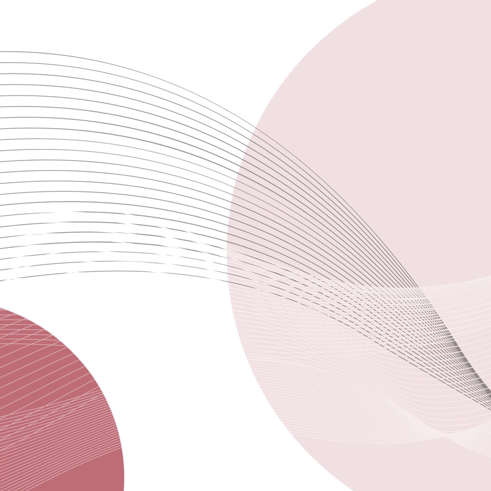
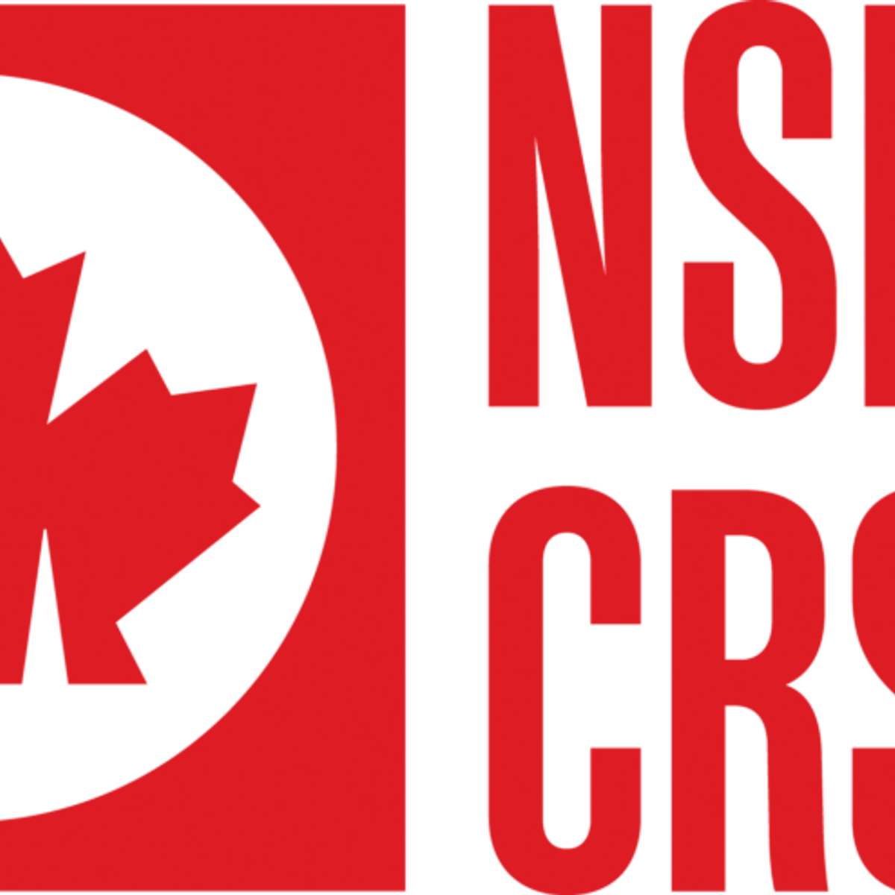

WooDowel: Innovative Plywood Sensor
Project members: Yonghao Shi, Chenzheng Li, Yuning Su, Xing-Dong Yang, Te-Yen Wu
Explore this project with: Yanghao Shi
Read MoreCoDesign Explore
July 31, 2024
Morning session: 10:00 AM – 12:00 PM (Invitation only)
Afternoon Session: 2:00 – 4:00 PM (Everyone is welcome)
Room 660, Engineering & Computer Science Building, University of Victoria


Project members: Yonghao Shi, Chenzheng Li, Yuning Su, Xing-Dong Yang, Te-Yen Wu
Explore this project with: Yanghao Shi
Read More
Project members: Zezhong Wang, Stephan Gruber, Michelle Levy, Sheelagh Carpendale
Explore this project with: Zezhong Wang
Read More
Project members: Foroozan Daneshzand, Charles Perin, Sheelagh Carpendale
Explore this project with: Foroozan Daneshzand
Read More
Project members: Rimika Chaudhury, Parmit Chilana
Explore this project with: Rimika Chaudhury
Read More
Project members: Bahare Bakhtiari, Charles Perin, Sowmya Samanth
Explore this project with: Bahare Bakhtiari
Read More
Project members: David Wong-Aitken, Parsa Rajabi, Sheelagh Carpendale, Parmit Chilana
Explore this project with: David Wong-Aitken
Read More
Project members: Sabrina Lakhdhir, Chehak Nayar, Fraser Anderson, Helene Fournier, Liisa Holsti, Irina Kondratova, Charles Perin, Jessi Stark, George Fitzmaurice, Lora Oehlberg, Ehud Sharlin, Sowmya Samanth
Explore this project with: Sowmya Samanth
Read More
Project members: Wei Wei, Sheelagh Carpendale, Charles Perin
Explore this project with: Wei Wei
Read More
Project members: Maryam Rezaie, Melanie Tory, Sheelagh Carpendale
Explore this project with: Maryam Rezaie
Read More
Project members: Nicholas Vincent
Explore this project with: Nicholas Vincent
Read More
Project members: Parnian Taghipour, Maryam Rezaie, Michelle Levy, Thomas Shermer, Sheelagh Carpendale
Explore this project with: Parnian Taghipour
Read MoreJoin us to explore some of the new technology being developed at Simon Fraser University and University of Victoria.
Examples of latest research in: